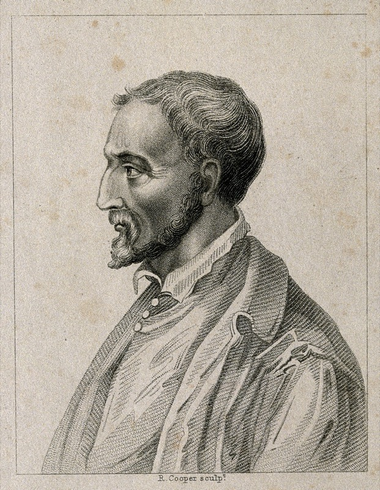
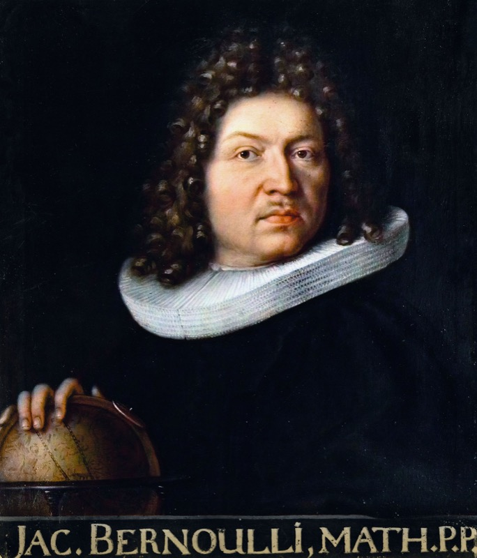
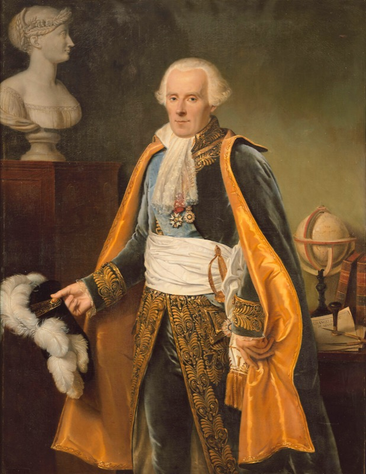
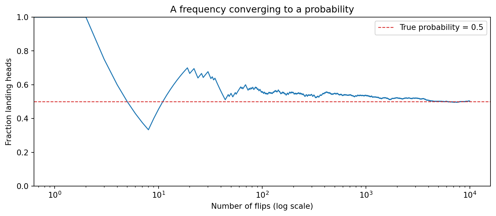
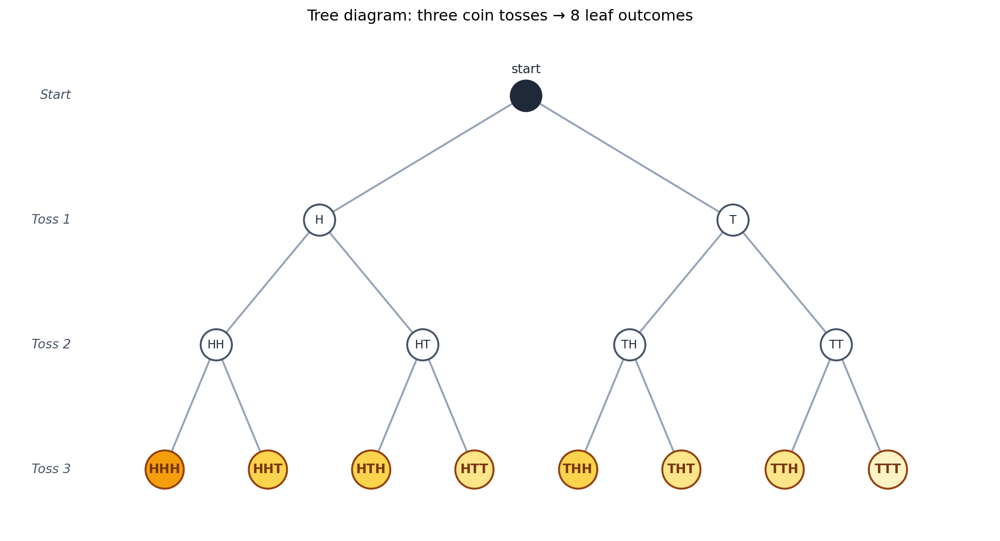
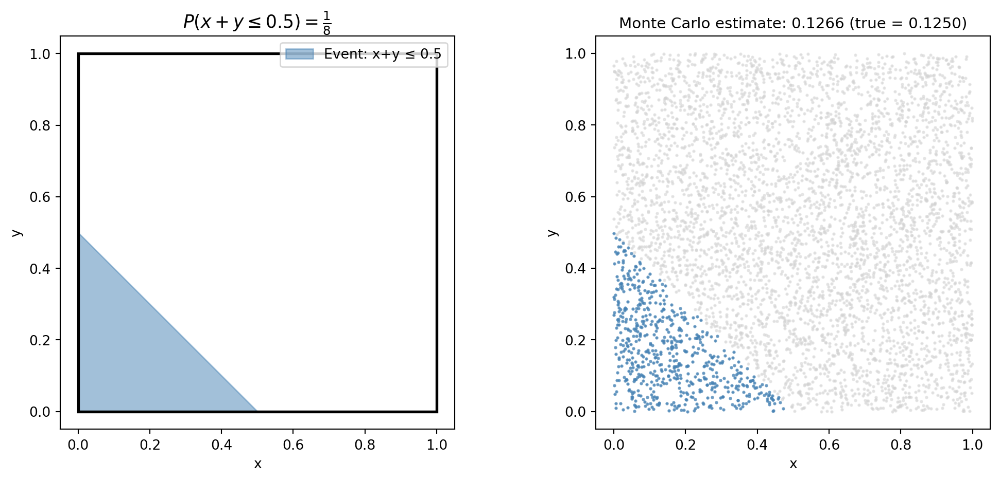

Probability is the branch of mathematics that studies uncertainty.
Whenever the world refuses to commit to a single answer — will the drug work? will it rain tomorrow? is this email spam? — probability gives us the language to say something useful about the alternatives. It is the language behind weather forecasts, medical trials, insurance, gambling, quantum mechanics, machine learning, and the routing algorithm that delivered this page to your screen.
What’s surprising is that probability is young. Mathematicians had been doing calculus and geometry for centuries before anyone took randomness seriously enough to write equations about it. The story of how probability became a real subject is short, dramatic, and full of gamblers, monks, astronomers, and one telephone engineer who quietly changed the world. We’ll meet a few of them before we begin.
3.1 A short history
Click any name to read more.
Tip▶ Gerolamo Cardano (1501–1576) — the gambling doctor

A 16th-century Italian physician, mathematician, and chronic gambler. Cardano wrote Liber de Ludo Aleae (“Book on Games of Chance”) around 1560 — the first known systematic treatment of probability. He worked out odds for dice, cards, and backgammon, and even discussed how to detect cheating.
Embarrassed by the subject’s disreputable connections, he kept the manuscript private. It wasn’t published until 1663 — almost 90 years after his death. Cardano’s instincts were correct, but the field had to be re-discovered by mathematicians who took it more seriously.
Tip▶ Blaise Pascal & Pierre de Fermat (1654) — letters that founded a field
Blaise Pascal (1623–1662)
Pierre de Fermat (1601–1665)
A French nobleman named the Chevalier de Méré asked Pascal a question about a dice game: if a game has to stop early, how should the pot be divided fairly between the players?
Pascal didn’t know. He wrote to Fermat in 1654, and the two exchanged a series of letters working out the answer. In doing so they invented — almost by accident — the foundations of probability theory: expected value, the multiplication rule, the structure of compound events. Six letters. The field begins here.
The problem they solved is still called the problem of points, and their solution is still the right one.
Pascal portrait: copy of François Quesnel (1691), Palace of Versailles (Wikimedia, CC BY 3.0). Fermat portrait: oil on canvas by Rolland Lefebvre, c. 1650 (Wikimedia, public domain).
Tip▶ Jacob Bernoulli (1654–1705) — the law of large numbers

Twenty years after Pascal and Fermat, the Swiss mathematician Jacob Bernoulli took up the question: if I flip a coin enough times, does the fraction of heads actually converge to its true probability?
Yes — and he proved it. His Law of Large Numbers (published posthumously in 1713 in Ars Conjectandi) is the bridge between frequencies you can measure and probabilities you cannot. It turns probability from a calculator’s curiosity into a science: the empirical world can be used to estimate the unseen.
Every time you compute an average, you are leaning on his theorem.
Portrait by his brother Niklaus Bernoulli, c. 1687 (Wikimedia, public domain).
Tip▶ Thomas Bayes (1701–1761) — the rule that runs modern AI
An English Presbyterian minister and amateur mathematician, Bayes wrote a paper on inverse probability — given an observed effect, what was the likely cause? — and never published it. After his death, his friend Richard Price found it in his papers and submitted it to the Royal Society in 1763.
For 200 years it was a curiosity. Then statisticians, and later machine learning researchers, noticed something: Bayes’ rule is the mathematics of learning from evidence. Every spam filter, every medical diagnostic system, every Bayesian neural network is a child of this short paper by a country minister who didn’t think it worth printing.
We’ll meet his rule formally a few chapters from now. It deserves the build-up.
The only commonly-circulated portrait traditionally identified as Thomas Bayes — its authenticity is disputed by historians (no verified likeness of Bayes survives). Colorized version by Mark Riehl (Wikimedia, CC BY-SA 4.0).
Tip▶ Pierre-Simon Laplace (1749–1827) — the great consolidator

If Bayes was the seed, Laplace was the gardener. The French polymath generalized Bayes’ rule, applied probability to astronomy, geodesy, demographics, and law, and wrote Théorie Analytique des Probabilités (1812) — the first comprehensive textbook of the subject.
Laplace took probability seriously as a science. He used it to weigh witness testimony in court cases, to estimate the population of France from a sample, to argue that the solar system was stable. After Laplace, no one could dismiss probability as gambler’s mathematics again.
A famous quip attributed to him: “It is remarkable that a science which began with the consideration of games of chance should have become the most important object of human knowledge.”
Portrait by Jean-Baptiste Paulin Guérin, 1838, Palace of Versailles (Wikimedia, public domain).
Tip▶ Andrey Kolmogorov (1903–1987) — the axioms
Until 1933, probability was a working subject without a formal foundation. Different mathematicians used different definitions; the field had paradoxes nobody could agree how to resolve.
Then a 30-year-old Soviet mathematician named Andrey Kolmogorov published Grundbegriffe der Wahrscheinlichkeitsrechnung — a slim monograph in which he proposed that probability theory should be built on three simple axioms (the ones we’ll meet later in this chapter) plus measure theory.
Within a decade, the entire field had reorganised around his framework. Every textbook written since 1933 — including this one — uses Kolmogorov’s axioms. The formal foundation of probability is younger than your grandparents.
Tip▶ Claude Shannon (1916–2001) — the bridge to machine learning
A telephone engineer at Bell Labs, Shannon noticed something nobody else had: information itself can be measured probabilistically. His 1948 paper A Mathematical Theory of Communication introduced entropy (H = -\sum p_i \log p_i), the bit, and the channel capacity theorem.
Shannon’s work is why you can make a phone call, store data on a hard drive, compress a file, or train a neural network. Every loss function in deep learning that has the word cross-entropy in it is a tribute to him. He also liked to ride a unicycle through the Bell Labs corridors while juggling.
If you take only one name from this list with you, take Shannon. He is the reason probability and computation became inseparable.
Photos of Shannon are still under copyright. The Bell Labs and MIT Museum archives hold the famous portraits.
That’s roughly four centuries of work, ending 75 years ago. The subject is still young. With that history in your pocket, let’s see what probability actually says.
You’ve probably heard these words countless times, but chances are they were used in a vague, casual way. Despite probability being everywhere in science and daily life, it can be deeply counterintuitive. The point of this chapter is to put a precise meaning on the word probability — precise enough that we can compute with it, simulate it, and bet on it.
We’ll get there in five passes:
A dialogue that exposes the question hiding in plain sight.
The frequentist view — probability as long-run frequency.
The subjective view — probability as degree of belief.
The formal framework — sample space, events, axioms.
A worked example that ties the three views together.
You can skip the rigorous parts on the first read; click the ▶ Show the math boxes when you want them.
3.2 A dialogue
The clearest way to see what’s at stake is to listen to a short conversation in a hospital. A relative is asking the nurse about a drug.
Relative: Nurse, what is the probability that the drug will work?
Nurse: I hope it works, we’ll know tomorrow.
Relative: Yes, but what is the probability that it will?
Nurse: Each case is different. We have to wait.
Relative: But out of a hundred patients treated under similar conditions, how many times would you expect it to work?
Nurse:(annoyed) I told you, every person is different. For some it works, for some it doesn’t.
Relative:(insisting) Then tell me — if you had to bet whether it will work or not, which side of the bet would you take?
Nurse:(brightening) I’d bet it will work.
Relative:(relieved) OK — would you be willing to lose two dollars if it doesn’t, and gain one dollar if it does?
Nurse:(exasperated) What a sick thought! You are wasting my time!
Two important things happened here.
First, the relative tried two completely different definitions of probability:
“Out of a hundred patients…” — probability as a long-run frequency.
“Which side of the bet would you take?” — probability as a degree of belief that can be elicited from someone’s willingness to bet.
Second, the nurse refused both. She wasn’t being unreasonable — she was sensing that this particular patient is unique. That tension — between the universal (population-level) and the particular (this-case) — is the central problem the rest of this chapter addresses.
TipThe two-stage framework
There are really two stages to applying probability to a real problem:
Stage 1 — Modelling (art). Decide on a sample space and a probability law. There are no rigid rules here. Reasonable people will disagree about which model fits.
Stage 2 — Analysis (science). Once the model is fixed, calculate probabilities. There is exactly one right answer; only your skill determines whether you find it.
Most “paradoxes” in probability are arguments about Stage 1 disguised as arguments about Stage 2. When two clever people get different answers to the same problem, they almost never disagree about the math — they disagree about which model is right.
The discipline of this chapter is to make Stage 1 explicit before calculating anything.
3.2.1 A real disagreement: the two-child puzzle
Abstract claims about “Stage 1 vs Stage 2” only land once you’ve watched two clever people disagree about a real problem. Here’s one. It’s short, it’s famous, and it has stumped working mathematicians.
You meet a stranger at a party. She tells you, “I have two children, and at least one of them is a boy.” What is the probability that both of her children are boys?
Take a moment. Write down your answer before reading on. Most people say 1/2 — “the other child is either a boy or a girl, those are equally likely, so 1/2.” Others, after some thought, say 1/3. A few say “it depends” and look smug.
Here’s the thing: both 1/3 and 1/2 can be defended, and the disagreement is entirely about Stage 1 — what sample space should we use? Once a sample space is fixed, every reasonable person gets the same number out. Let’s see this happen.
Model A — “boy first, girl second” is a different family from “girl first, boy second”. Birth order matters; the four equally likely families are:
The stranger told us “at least one is a boy”, so we eliminate GG. Three families remain — BB, BG, GB — and all three are still equally likely (we haven’t been given any reason to prefer one over the others). Of those three, only BB has two boys. So P(\text{both boys}) = 1/3.
Model B — we already met one of the children, and he was a boy. Maybe she said it because the boy was standing next to her. In that case, the information isn’t “at least one is a boy” — it’s “this specific child is a boy”. The other child is then independent of the one we met, and is a boy or a girl with equal probability. So P(\text{both boys}) = 1/2.
So what actually changed? The two models aren’t disagreeing about the rules of probability — they’re reasoning over different sample spaces.
Model A samples families. Start with the four equally likely families \{\text{BB}, \text{BG}, \text{GB}, \text{GG}\}, filter out the ones with no boy. Three families survive; only one is BB.
Model B samples a specific child and asks about their sibling. Once one child has been identified as a boy, BG and GB are no longer two distinct outcomes — they collapse into “this boy plus one unknown sibling”, and the sibling is a fresh coin flip.
The verbal sentence “at least one is a boy” is the same in both stories, but it was generated by two different experiments. The sample space follows the experiment, not the sentence.
Two models, two different answers. Nobody has done arithmetic yet. The argument is happening at Stage 1.
We can confirm Model A’s answer by simulation — pick the model and the math falls out.
# Model A: simulate many two-child families. Each child is independently# B or G with probability 1/2. Among families with AT LEAST ONE boy, what# fraction have TWO boys?import numpy as nprng = np.random.default_rng(seed=0)n_families =200_000child_1 = rng.integers(0, 2, size=n_families) # 1 = boy, 0 = girlchild_2 = rng.integers(0, 2, size=n_families)at_least_one_boy = (child_1 ==1) | (child_2 ==1)both_boys = (child_1 ==1) & (child_2 ==1)# Conditional frequency: among families with at least one boy,# the fraction that have two boys.p_model_A = both_boys.sum() / at_least_one_boy.sum()print(f"Model A simulation: P(both boys | at least one boy) ≈ {p_model_A:.4f}")print(f"Theoretical answer: 1/3 ≈ {1/3:.4f}")
Model A simulation: P(both boys | at least one boy) ≈ 0.3324
Theoretical answer: 1/3 ≈ 0.3333
# Model B: simulate the same families, but now we 'meet' a uniformly random# child from each family. Condition on the child we met being a boy, and ask# whether the OTHER child is also a boy.# Pick a random child to 'meet' from each family (0 = first, 1 = second)which_met = rng.integers(0, 2, size=n_families)met_child = np.where(which_met ==0, child_1, child_2)other_child = np.where(which_met ==0, child_2, child_1)met_a_boy = (met_child ==1)other_is_boy = (other_child ==1)p_model_B = other_is_boy[met_a_boy].mean()print(f"Model B simulation: P(other child is boy | met a boy) ≈ {p_model_B:.4f}")print(f"Theoretical answer: 1/2 ≈ {1/2:.4f}")
Model B simulation: P(other child is boy | met a boy) ≈ 0.5004
Theoretical answer: 1/2 ≈ 0.5000
The simulations agree with the theory for whichever model you chose. The math is not in dispute. The model is.
TipThe lesson
When someone claims a probability problem has a “right” answer and a “wrong” answer, your first job is not to do the calculation. It’s to ask: what sample space are you using, and why? Almost every probability paradox you’ll meet — Monty Hall, the Sleeping Beauty problem, the boy-girl paradox above, the envelope paradox — is a Stage 1 disagreement wearing a Stage 2 costume. The math is fine. The modelling is what people are actually arguing about.
Throughout this book, whenever we set up a problem, we’ll spell out \Omega first. It’s a habit worth building.
3.3 The frequentist view: probability is what frequencies converge to
The frequentist answer to “what is probability?” is a recipe:
The probability of an event is the long-run frequency with which it happens, if you could repeat the experiment infinitely many times.
This is intuitive for things you can repeat. “This coin lands heads with probability 0.5” means: if you flip it enough times, the fraction landing heads will get arbitrarily close to 0.5.
Let’s actually watch that happen.
import numpy as npimport matplotlib.pyplot as pltrng = np.random.default_rng(seed=0)n_flips =10_000# 1 = heads, 0 = tails. Fair coin so probability of heads = 0.5.flips = rng.integers(0, 2, size=n_flips)# Running frequency of heads after each fliprunning_heads = np.cumsum(flips)running_freq = running_heads / np.arange(1, n_flips +1)fig, ax = plt.subplots(figsize=(9, 4))ax.plot(running_freq, color="C0", lw=1.2)ax.axhline(0.5, color="C3", ls="--", lw=1, label="True probability = 0.5")ax.set_xscale("log")ax.set_xlabel("Number of flips (log scale)")ax.set_ylabel("Fraction landing heads")ax.set_title("A frequency converging to a probability")ax.legend()ax.set_ylim(0, 1)plt.tight_layout()plt.show()

Notice three things in the plot:
The first 10 flips are all over the place. The fraction is 0, or 1, or 0.6, depending on what came up. Frequency is not probability when the sample is small.
By the time we have 100+ flips, the fraction is close to 0.5 and stays close. That’s frequency converging to probability.
It never settles exactly. It zigzags around 0.5 forever, the zigzag getting smaller as n grows.
The frequentist says: “the probability of heads is 0.5” is a statement about that limit. The behaviour you see in the plot — the convergence — is the empirical content of the claim.
Note▶ Show the math — The Law of Large Numbers, briefly
What we just observed is a special case of the Law of Large Numbers.
If X_1, X_2, \ldots are independent flips of the same coin (so each X_i is 1 with probability p and 0 with probability 1-p), and we form the sample mean
\bar{X}_n = \frac{1}{n}\sum_{i=1}^{n} X_i,
then the Law of Large Numbers says \bar{X}_n \to p as n \to \infty. There are two flavours: the weak law (convergence in probability) and the strong law (almost-sure convergence). Both make rigorous the intuitive idea that “the long-run frequency equals the probability”.
A full proof needs Chebyshev’s inequality (which we’ll meet later) and some measure theory. We’ll come back to it in the chapter on limit theorems. For now, the picture above is what you should keep in mind.
3.3.1 Where the frequentist view runs out of road
The recipe only works for repeatable experiments. Try applying it to these statements:
“The probability that life exists on Mars is 30%.”
“There is a 70% chance the defendant is guilty.”
“The probability that the Iliad and Odyssey were composed by the same person is 90%.”
None of these can be repeated. There is exactly one Mars, one trial, one historical fact about Homer. There is no long-run frequency to point at. And yet people make statements like these every day, and they seem to convey real information.
So either we say “those statements are nonsense” — or we expand our notion of probability to cover them. That’s what the subjective view does.
3.4 The subjective view: probability is a degree of belief
The subjective answer:
The probability of an event, for a given person at a given time, is revealed by the bets they are willing to take on it.
Look at the dialogue again. The relative offered the nurse this bet:
If the drug works → the nurse gains $1.
If the drug does not work → the nurse loses $2.
What does it mean if she accepts? Let p = P(\text{works}) be her belief that the drug works. Across many imagined runs of the bet, her average (expected) profit is:
So if the nurse accepts, she is implicitly saying she believes the drug works with probability at least 2/3 (≈ 67%). In practice, no one takes a bet at the exact break-even point — people want a margin of safety — so accepting a “lose $2, win $1” bet usually signals belief closer to 80–90%. She would have to be quite confident.
The general rule. If a bet pays you $W when you win and costs you $L when you lose, you should only take it if your belief satisfies
p \;\ge\; \frac{L}{W + L}.
The bigger the loss relative to the win, the higher your belief must be:
Win
Lose
Minimum belief to take the bet
$1
$1
1/2 = 50%
$1
$2
2/3 ≈ 67% (the nurse’s bet)
$1
$9
9/10 = 90%
By offering bets of different shapes and watching which ones she accepts or refuses, we can pin down her subjective probability to whatever precision we like. The bet she’s willing to take is her belief, made measurable.
Tip▶ Where does the formula p \ge L/(W+L) come from?
The break-even rule we just derived has a longer history than it looks:
Christiaan Huygens (1657) introduced the idea of expected value in De Ratiociniis in Ludo Aleae — the first systematic probability text. The formula E[\text{profit}] = pW - (1-p)L comes directly from his definition.
Jakob Bernoulli (1713) — yes, the same Bernoulli from earlier in this chapter — proved the Law of Large Numbers in Ars Conjectandi. This is what justifies the rule across many bets: average profit and expected profit converge.
Daniel Bernoulli (1738) — Jakob’s nephew — pointed out in the St. Petersburg paradox that real people don’t maximize expected money; they maximize expected utility. Losing $2 hurts more than gaining $2 helps. This is the formal reason a real nurse needs ~80– 90% belief, not just the break-even ≥ 67%.
So the inequality is Huygens’s; the reason it’s reliable is Jakob Bernoulli’s; the reason humans don’t bet right at the break-even line is Daniel Bernoulli’s.
This view doesn’t need repetition. It works for one-shot events, for historical claims, for personal beliefs about the future.
A natural follow-up question is: if two rational people start with different beliefs but see the same evidence, do they end up agreeing? The answer is yes — and the formal mechanism for how beliefs update is Bayes’ rule, which we’ll meet two chapters from now.
3.4.1 Where the subjective view runs out of road
The standard objections are:
“Whose probability are we talking about?” — different people, looking at the same evidence, can have different priors (their starting beliefs, before seeing any data) and so different posteriors (their updated beliefs after seeing the data). Frequentists find this disturbing; subjectivists say it’s just honest.
“How do you choose a prior in practice?” — easier said than done. In ML this shows up as the prior choice problem in Bayesian models: how much should you let your starting belief shape the conclusion?
We will pragmatically use whichever view fits the problem. Don’t pick a side. For coin flips and dice, frequentist intuition is sharper. For “how confident is this classifier?”, subjective intuition is sharper. The math underneath is the same.
3.5 The formal framework
Both views — frequentist and subjective — agree on the mathematical structure that any probability assignment has to obey. That structure is:
A sample space\Omega — the set of all possible outcomes.
A collection of events — subsets of \Omega that we might want to assign probabilities to.
A probability lawP — a function that assigns a number to each event, obeying three axioms (non-negativity, normalization, additivity — we’ll state them precisely in Probability law: the three axioms below).
Three pieces. The art is in choosing the first two; the science is in working with the third. Let’s build each piece against a concrete problem we can simulate.
3.5.1 Concrete problem: rolling two dice
Throughout the rest of this chapter, we’ll use a single running example. You roll two ordinary six-sided dice. We’ll define everything against this.
import pandas as pd# Enumerate all 36 outcomesoutcomes = [(d1, d2) for d1 inrange(1, 7) for d2 inrange(1, 7)]print(f"Total outcomes: {len(outcomes)}")print("First few:", outcomes[:6])
Total outcomes: 36
First few: [(1, 1), (1, 2), (1, 3), (1, 4), (1, 5), (1, 6)]
3.5.2 Sample space
The sample space\Omega is the set of all possible outcomes of an experiment. For two dice:
Three things to insist on, and they’re not optional:
Mutually exclusive. Each die roll produces exactly one outcome. You can’t roll “(1,2) and (3,4) at the same time”.
Collectively exhaustive. Every possible result of the experiment is in the list. You can’t roll something not in \Omega.
Right level of detail. Detailed enough to answer the questions you care about, but no more.
WarningWhy mutual exclusivity matters
Compare these two attempted sample spaces for a single die roll:
\Omega_{\text{good}} = \{1, 2, 3, 4, 5, 6\} ✓
\Omega_{\text{bad}} = \{\text{"1 or 3"}, \text{"1 or 4"}, 2, 3, 5, 6\} ✗
The second one is broken. If you roll a 1, which outcome occurred — “1 or 3” or “1 or 4”? The outcomes overlap (both contain a 1), so the result of the experiment isn’t uniquely defined. Probability calculations break immediately: the axioms assume disjointness when adding.
A working sample space must let you point at exactly one outcome after the experiment runs. No ambiguity.
The third point is subtle. The same experiment — rolling two dice — can be modelled with very different sample spaces depending on how much detail we keep. Let’s compare three of them.
# Three different sample spaces for the SAME experiment: rolling two dice.# --- (A) Too coarse: record only the SUM of the two dice. ---# The smallest possible sum is 1+1 = 2; the largest is 6+6 = 12.# So the sample space is the integers from 2 to 12 — eleven outcomes.omega_A =list(range(2, 13))print(f"(A) Sum of the two dice:")print(f" Ω = {omega_A}")print(f" |Ω| = {len(omega_A)} (eleven possible sums: 2, 3, ..., 12)")print()# --- (B) The natural one: record the ORDERED PAIR (die1, die2). ---# Each die has 6 faces, so there are 6 x 6 = 36 ordered pairs.omega_B = outcomesprint(f"(B) Ordered pair (first die, second die):")print(f" Ω = {{(1,1), (1,2), ..., (6,6)}}")print(f" |Ω| = {len(omega_B)} (six choices for each die: 6 x 6 = 36)")print()# --- (C) Too fine: ordered pair PLUS colour of each die PLUS the rotation# angle each die came to rest at. Infinitely many possibilities, none# of which help us answer dice questions. We won't enumerate it.print("(C) Ordered pair + colour + rotation angle on landing:")print(" |Ω| is effectively infinite — and useless for our questions.")
(A) Sum of the two dice:
Ω = [2, 3, 4, 5, 6, 7, 8, 9, 10, 11, 12]
|Ω| = 11 (eleven possible sums: 2, 3, ..., 12)
(B) Ordered pair (first die, second die):
Ω = {(1,1), (1,2), ..., (6,6)}
|Ω| = 36 (six choices for each die: 6 x 6 = 36)
(C) Ordered pair + colour + rotation angle on landing:
|Ω| is effectively infinite — and useless for our questions.
What does each one let us ask?
Sample space (A) — sums only. Good for “what’s the probability the sum is 7?”. But it cannot answer “was the first die a 6?” — that information has been thrown away. The sum 7 could have come from (1,6), (2,5), (3,4), (4,3), (5,2) or (6,1), and (A) doesn’t remember which.
Sample space (C) — pairs + colour + rotation angle. Can answer everything (including questions nobody asked, like “did the red die land at exactly 47°?”). The extra detail makes the model harder to work with and adds no value.
Sample space (B) — ordered pairs. Can answer every question we actually care about (sum, individual die values, parity, max, min, …) and nothing more. This is the right level of detail.
TipChoosing the sample space is part of modelling
There is no “the” sample space for an experiment. There is the sample space you choose for the questions you want to answer. This is the clearest example of Stage 1 (modelling = art) at work.
3.5.3 Events
An event is just a subset of \Omega. Some examples for our two dice:
omega =set(outcomes)A = {(d1, d2) for d1, d2 in omega if d1 + d2 ==7} # sum is 7B = {(d1, d2) for d1, d2 in omega if d1 == d2} # doublesC = {(d1, d2) for d1, d2 in omega if d1 ==6} # first die is 6D = {(d1, d2) for d1, d2 in omega if d1 + d2 >=10} # sum ≥ 10print(f"A = sum is 7 ({len(A)} outcomes): {sorted(A)}")print(f"B = doubles ({len(B)} outcomes): {sorted(B)}")print(f"C = first die is 6 ({len(C)} outcomes): {sorted(C)}")print(f"D = sum ≥ 10 ({len(D)} outcomes): {sorted(D)}")
A = sum is 7 (6 outcomes): [(1, 6), (2, 5), (3, 4), (4, 3), (5, 2), (6, 1)]
B = doubles (6 outcomes): [(1, 1), (2, 2), (3, 3), (4, 4), (5, 5), (6, 6)]
C = first die is 6 (6 outcomes): [(6, 1), (6, 2), (6, 3), (6, 4), (6, 5), (6, 6)]
D = sum ≥ 10 (6 outcomes): [(4, 6), (5, 5), (5, 6), (6, 4), (6, 5), (6, 6)]
Because events are sets, you can combine them with set operations. Combining events gives you new events:
# Sum is 7 OR doublesA_or_B = A | B # set union → "A or B"# Sum is 7 AND first die is 6 → exactly one roll: (6, 1)A_and_C = A & C # set intersection → "A and C"# Sum is 7 but NOT doublesA_not_B = A - B # set difference → "A but not B"# Sum is 7 AND doubles → impossible (no double sums to 7), so empty setA_and_B = A & Bprint(f"A ∪ B ('sum is 7 OR doubles'): {len(A_or_B)} outcomes")print(f"A ∩ C ('sum is 7 AND first die is 6'): {len(A_and_C)} outcomes → {A_and_C}")print(f"A \\ B ('sum is 7 but not doubles'): {len(A_not_B)} outcomes")print(f"A ∩ B ('sum is 7 AND doubles'): {len(A_and_B)} outcomes → {A_and_B} (empty set ∅)")
A ∪ B ('sum is 7 OR doubles'): 12 outcomes
A ∩ C ('sum is 7 AND first die is 6'): 1 outcomes → {(6, 1)}
A \ B ('sum is 7 but not doubles'): 6 outcomes
A ∩ B ('sum is 7 AND doubles'): 0 outcomes → set() (empty set ∅)
A few things to notice in the output:
A ∩ C gives the single roll (6, 1) — the first die is 6 and the sum is 7. So this intersection is not empty.
A ∩ Bis empty, because no double (k, k) sums to 7 (we’d need 2k = 7, but k has to be a whole number from 1 to 6). When two events cannot happen together, their intersection is the empty set \emptyset, and we say they are disjoint or mutually exclusive.
That’s the entire grammar. Set union for “or”, set intersection for “and”, set complement for “not”. Probability theory inherits its grammar from set theory.
Note▶ Show the math — Set algebra and De Morgan’s laws
For any events A, B, C \subseteq \Omega, the following identities hold and are used constantly:
Commutative.A \cup B = B \cup A, \;\; A \cap B = B \cap A.
Associative.(A \cup B) \cup C = A \cup (B \cup C), \;\; (A \cap B) \cap C = A \cap (B \cap C).
Distributive.A \cap (B \cup C) = (A \cap B) \cup (A \cap C), \;\; A \cup (B \cap C) = (A \cup B) \cap (A \cup C).
De Morgan’s laws (the most-used one in proofs):
(A \cup B)^c = A^c \cap B^c, \qquad (A \cap B)^c = A^c \cup B^c.
In words: “not (A or B)” = “(not A) and (not B)”, and the dual.
Before we go further, a quick detour into something we’ll lean on shortly: the difference between countable and uncountable sets. The integers and rationals are countable (you can list them); the real numbers are uncountable (you cannot). The next callout makes this concrete.
Tip▶ Show the math — Different sizes of infinity (Hilbert’s Hotel)
If “countable vs uncountable” sounds vague, here’s the picture that makes it concrete.
Hilbert’s Hotel has infinitely many rooms — one for each natural number — and they’re all full. A new guest arrives. Can the manager fit them in?
Yes! Move the guest in room 1 to room 2. Move room 2 to room 3. In general, move room n to room n+1. Room 1 is now free. The new guest checks in.
What if infinitely many new guests arrive? Still fine. Move every current guest from room n to room 2n. All odd-numbered rooms are now empty. Room any number of new guests in them.
This is what mathematicians mean by countably infinite: a set is countable if you can put its elements in 1-to-1 correspondence with the natural numbers \{1, 2, 3, \ldots\}. The integers \mathbb{Z} are countable. Even the algebraic numbers are countable. The rationals are countable too — and the way Cantor showed this is the warm-up for the diagonal argument we’ll see in a moment.
Warm-up: \mathbb{Q} fits in Hilbert’s Hotel (Cantor’s zigzag). Lay out every positive rational p/q in a 2D grid: row p, column q. The grid contains every positive rational somewhere — even duplicates like 2/4 = 1/2 — but it’s a 2D infinity, so naively it looks “bigger” than \mathbb{N}.
Cantor’s trick: walk through the grid along anti-diagonals (the lines where p + q is constant). Skip any fraction you’ve already seen in lowest terms. Number each new fraction as you go: 1, 2, 3, …. Every rational eventually gets a number, so the rationals can be put in 1-to-1 correspondence with \mathbb{N}. They fit.
import matplotlib.pyplot as pltfrom math import gcd# Build the grid of positive rationals up to numerator/denominator <= 5.# Walk anti-diagonals (where p + q is constant), increasing.# Skip duplicates: visit p/q only when gcd(p, q) == 1.max_pq =5visit_order = {} # (p, q) -> position number on the listseen_values =set() # set of (p_reduced, q_reduced) already countedcounter =0for s inrange(2, 2* max_pq +1): # s = p + qfor p inrange(1, s): q = s - pif p > max_pq or q > max_pq:continue g = gcd(p, q) reduced = (p // g, q // g)if reduced in seen_values: visit_order[(p, q)] =None# duplicate — skipelse: counter +=1 visit_order[(p, q)] = counter seen_values.add(reduced)fig, ax = plt.subplots(figsize=(7.5, 6))ax.set_xlim(0.3, max_pq +1.0)ax.set_ylim(0.3, max_pq +0.7)ax.invert_yaxis()ax.axis("off")# Column headers (q values)for q inrange(1, max_pq +1): ax.text(q, 0.6, f"$q = {q}$", ha="center", va="center", fontsize=11, color="grey")# Row headers (p values)for p inrange(1, max_pq +1): ax.text(0.5, p, f"$p = {p}$", ha="right", va="center", fontsize=11, color="grey")# Draw the grid cells with the fraction p/qfor (p, q), pos in visit_order.items(): is_visited = pos isnotNone label =f"$\\frac{{{p}}}{{{q}}}$"if is_visited: ax.text(q, p, label, ha="center", va="center", fontsize=14, color="black", fontweight="bold", bbox=dict(boxstyle="round,pad=0.3", facecolor="white", edgecolor="#27ae60", lw=1.5))# Visit-order number in the corner ax.text(q +0.32, p -0.32, str(pos), ha="center", va="center", fontsize=10, color="#27ae60", fontweight="bold")else: ax.text(q, p, label, ha="center", va="center", fontsize=12, color="lightgrey")# Draw arrows along the visit path connecting consecutive numberspath =sorted( [(pos, p, q) for (p, q), pos in visit_order.items() if pos isnotNone], key=lambda t: t[0],)for k inrange(len(path) -1): _, p1, q1 = path[k] _, p2, q2 = path[k +1] ax.annotate("", xy=(q2, p2), xytext=(q1, p1), arrowprops=dict(arrowstyle="->", color="#27ae60", lw=1.0, alpha=0.5))ax.set_title("Cantor's zigzag: every positive rational gets a number", fontsize=12)plt.tight_layout()plt.show()

Cantor’s zigzag enumeration of the positive rationals. Walking along anti-diagonals of the (p, q) grid, we visit every fraction p/q. Numbers in green show the visit order, skipping fractions already seen in lowest terms (greyed out). Every rational eventually gets a position — so Q is countable.
So the rationals — even though they form a 2D infinity — fit in Hilbert’s Hotel. The same geometric idea (walk a 2D table along its diagonals) gives us a 1D listing.
The punchline: the reals don’t fit. Hilbert’s Hotel cannot accommodate the real numbers\mathbb{R}. Cantor proved this in 1891 with his famous diagonal argument: assume you have a list of all reals between 0 and 1; construct a new real that differs from the n-th entry in its n-th decimal digit; this new real is on the list (we said the list was complete) but cannot be on the list (it differs from every entry). Contradiction. So no list exists.
The same diagonal geometry that succeeded for \mathbb{Q} now fails for \mathbb{R}. For \mathbb{Q}, walking the diagonals enumerated every fraction. For \mathbb{R}, walking the diagonal of any attempted list lets us escape it — build a real that’s missing.
The picture below shows it in action. The boxed digits along the diagonal — d_{11}, d_{22}, d_{33}, \ldots — are read off the supposed list. The new number r^\star at the bottom is built by flipping each diagonal digit (we use the rule “if it’s \le 4, change to 8; otherwise change to 1”). Whatever row you point to, r^\star differs from it in at least one position — so r^\star cannot be on the list. But the list was supposed to contain every real in [0, 1]. Contradiction.
import matplotlib.pyplot as pltimport numpy as np# A made-up "list of all reals in [0, 1]" — five rows, six digits each# (in reality the list would be infinite and the digits would go on# forever; we truncate for the picture).rows = [ [3, 1, 4, 1, 5, 9], [2, 7, 1, 8, 2, 8], [1, 4, 1, 4, 2, 1], [0, 5, 7, 7, 2, 1], [9, 2, 5, 6, 5, 3],]n_rows =len(rows)n_cols =len(rows[0])# Build the diagonal-flipped number r*: differ from row n in position n.flip =lambda d: 8if d <=4else1r_star = [flip(rows[i][i]) for i inrange(n_rows)]fig, ax = plt.subplots(figsize=(8, 4.5))ax.set_xlim(-0.5, n_cols +1.0)ax.set_ylim(-2.0, n_rows +0.5)ax.invert_yaxis()ax.axis("off")# Header row: column indices d_1, d_2, ...for j inrange(n_cols): ax.text(j +1, -0.3, f"$d_{j+1}$", ha="center", va="center", fontsize=12, color="grey")# The list of realsfor i, row inenumerate(rows): ax.text(0, i, f"$r_{i+1} = 0.$", ha="right", va="center", fontsize=13)for j, digit inenumerate(row): is_diag = (i == j) ax.text(j +1, i, str(digit), ha="center", va="center", fontsize=14, color="white"if is_diag else"black", fontweight="bold"if is_diag else"normal", bbox=dict( boxstyle="round,pad=0.25", facecolor="#c0392b"if is_diag else"white", edgecolor="#c0392b"if is_diag else"lightgrey", ))# Separatorax.plot([-0.3, n_cols +0.5], [n_rows -0.5, n_rows -0.5], color="black", lw=1)# r*: built by flipping the diagonalax.text(0, n_rows +0.2, r"$r^\star = 0.$", ha="right", va="center", fontsize=13, fontweight="bold")for j, digit inenumerate(r_star): ax.text(j +1, n_rows +0.2, str(digit), ha="center", va="center", fontsize=14, fontweight="bold", color="white", bbox=dict(boxstyle="round,pad=0.25", facecolor="#27ae60", edgecolor="#27ae60"))ax.text(n_cols +0.6, n_rows +0.2,r"differs from $r_n$ in position $n$", ha="left", va="center", fontsize=11, color="#27ae60", style="italic")plt.tight_layout()plt.show()
Cantor’s diagonal argument: r* differs from every row in the diagonal position, so r* cannot be on the list — yet the list was supposed to contain every real in [0, 1].
“But you only showed five numbers — how is this a proof?” This is the right question to ask. The list is supposed to be infinite, and we obviously can’t write down infinitely many entries. So how does the argument generalise?
The trick is that the proof is not about a particular list — it’s about any list. We never construct the list ourselves. The opponent does (or claims they could). All we provide is a recipe that, applied to any list, produces a number missing from it. The recipe is one short sentence:
“For each n, the n-th digit of r^\star is different from the n-th digit of r_n.”
Notice what this recipe needs to know: just the n-th digit of the n-th row, for every n. Whatever list you hand me — five rows or five trillion — the same recipe applies.
Now suppose someone says: “You stopped at row 5. Maybe r^\star is at row 1,000,000 of the real list.” My reply: if r^\star = r_{1{,}000{,}000}, they must agree in every decimal position — including the 1,000,000-th. But by the recipe, the 1,000,000-th digit of r^\star is defined to differ from the 1,000,000-th digit of r_{1{,}000{,}000}. So they can’t be equal. The same argument works for any row number, no matter how large — because the disagreement at row n is built into the construction for every n, not checked one by one. That’s the crucial move: a single finite recipe handles infinitely many cases simultaneously.
So the worked example with five rows is just a visual aid — you can see the geometry of the diagonal in a small case. The real proof works on the infinite case because the recipe doesn’t depend on the list’s length. It works for any list, including the imagined infinite one.
Note▶ Why doesn’t this argument also “disprove” \mathbb{Q}?
You might wonder: couldn’t we apply the same diagonal trick to a list of rationals q_1, q_2, q_3, \ldots and conclude that \mathbb{Q} is also uncountable? But we just showed \mathbb{Q}is countable (zigzag), so something must rescue us.
Here’s the rescue. The diagonal recipe builds r^\star digit by digit. The result is a real number — but with no guarantee that its decimal expansion is eventually periodic. Infinite non-repeating decimals are irrational. So the constructed r^\star is generally not a rational at all.
That means: when the opponent’s list is supposed to contain every rational, our r^\star being missing from it is not a contradiction — r^\star was never required to be on a list of rationals in the first place.
When the opponent’s list is supposed to contain every real, our r^\star being missing is a contradiction — because r^\star is a real, by construction (any decimal expansion defines a real).
That asymmetry — “diagonalising a list of rationals escapes \mathbb{Q}, but diagonalising a list of reals stays inside \mathbb{R}” — is the entire reason the argument works for one and not the other.
This means there are at least two genuinely different sizes of infinity: the countable (the rooms in Hilbert’s Hotel) and the uncountable (the real line). It also means probability theory on \mathbb{R} is fundamentally different from probability on a finite set — which is why we’ll need calculus, integration, and measure theory once we get to continuous distributions.
That’s all the measure theory we need for now. Welcome to the deep end.
With that distinction in hand, a small caveat about events is worth knowing — though we won’t use it directly. So far we’ve said “event = subset of \Omega” without worrying about it. For finite or countable sample spaces (dice, coins, integers) that’s exactly right. For uncountable sample spaces — like the real line — every individual point still has probability zero, and probabilities are assigned to intervals and regions instead. This is all you need to work with continuous probability. The deeper question of which subsets of the real line can be assigned a probability at all belongs to measure theory, a topic beyond the scope of this book.
3.5.4 Probability law: the three axioms
A probability lawP is a function from events to numbers that satisfies three axioms:
ImportantThe Kolmogorov axioms
For any events A, B in a sample space \Omega:
(A1) Non-negativity.\;\;P(A) \ge 0.
(A2) Normalization.\;\;P(\Omega) = 1.
(A3) Additivity. If A and B are disjoint (A \cap B =
\emptyset), then P(A \cup B) = P(A) + P(B).
More generally, for a countably infinite sequence of pairwise disjoint events A_1, A_2, \ldots: P\!\left(\bigcup_{i=1}^{\infty} A_i\right) = \sum_{i=1}^{\infty} P(A_i).
Three axioms. That’s the whole foundation. Everything else in probability theory — every formula, every theorem, every proof — follows from these three.
Let’s verify them on our dice.
# For fair dice, each of the 36 outcomes has probability 1/36.# We define the probability law as: for any event E, P(E) = |E| / 36.def P(event):returnlen(event) /36# (A1) Non-negativity — trivially true since |event| ≥ 0print(f"(A1) P(A) = {P(A):.4f} ≥ 0 ✓")# (A2) Normalizationprint(f"(A2) P(Ω) = {P(omega)} = 1 ✓")# (A3) Additivity. Pick two disjoint events.# E = "sum is 7", F = "sum is 11" — these can't both happen.E = {(d1, d2) for d1, d2 in omega if d1 + d2 ==7}F = {(d1, d2) for d1, d2 in omega if d1 + d2 ==11}print(f" E ∩ F = {E & F} (disjoint ✓)")print(f" P(E) + P(F) = {P(E):.4f} + {P(F):.4f} = {P(E) + P(F):.4f}")print(f" P(E ∪ F) = {P(E | F):.4f}")print(f" Equal ✓")
That’s it. The rest of probability theory is just consequences of these three rules.
Note▶ Show the math — Useful consequences of the axioms
From the three axioms alone, we can derive a long list of useful facts. Here are the most-used ones, with proofs.
1. P(\emptyset) = 0.
Proof.\Omega = \Omega \cup \emptyset and these are disjoint, so by (A3): P(\Omega) = P(\Omega) + P(\emptyset), which gives P(\emptyset)
= 0. \blacksquare
2. Complement rule: P(A^c) = 1 - P(A).
Proof.A and A^c are disjoint and A \cup A^c = \Omega. By (A3): P(A) + P(A^c) = P(\Omega) = 1. Rearranging gives the claim. \blacksquare
3. Upper bound: P(A) \le 1.
Proof. From (2), P(A) = 1 - P(A^c) \le 1 since P(A^c) \ge 0 by (A1). \blacksquare
4. Monotonicity: if A \subseteq B, then P(A) \le P(B).
Proof. Write B as a disjoint union: B = A \cup (B \cap A^c). By (A3): P(B) = P(A) + P(B \cap A^c) \ge P(A), since P(B \cap A^c) \ge 0. \blacksquare
5. Inclusion–exclusion (two events):
P(A \cup B) = P(A) + P(B) - P(A \cap B).
Proof. Decompose A \cup B into three disjoint pieces:
A \cup B = (A \cap B^c) \;\sqcup\; (A^c \cap B) \;\sqcup\; (A \cap B).
Proof. For two events, this is (5) plus P(A \cap B) \ge 0. The general case follows by induction on the number of events (and a small extra argument for countable unions). \blacksquare
The union bound looks weak — it just throws away the intersection — but it’s used constantly in machine learning theory because it requires no assumptions about how the events relate to each other.
3.6 Sequential experiments and tree diagrams
Many real experiments unfold in stages. You don’t roll all your dice at once — you roll the first, see what happens, then roll the second. You don’t measure all your sensor outputs at once — readings come in over time. You don’t read an email and decide it’s spam in a single glance — you check the sender, then the subject line, then the body.
For these step-by-step experiments, the cleanest representation is a tree diagram. Each branch from a node represents a possible outcome at that stage; each path from root to leaf is one complete sequence of outcomes. The set of all leaves is the sample space.
Let’s draw one. We’ll use the simplest sequential experiment that’s still interesting: flipping a fair coin three times.
import matplotlib.pyplot as pltfrom matplotlib.patches import FancyArrowPatchfig, ax = plt.subplots(figsize=(11, 6))# Each level's x positions and labelsdef draw_tree(ax):# Layout: stage in y, paths in x# Stage 0 (root) at y=3, then stage 1 at y=2, stage 2 at y=1, stage 3 at y=0 nodes = {"root": (4, 3),"H": (2, 2), "T": (6, 2),"HH": (1, 1), "HT": (3, 1), "TH": (5, 1), "TT": (7, 1),"HHH": (0.5, 0), "HHT": (1.5, 0),"HTH": (2.5, 0), "HTT": (3.5, 0),"THH": (4.5, 0), "THT": (5.5, 0),"TTH": (6.5, 0), "TTT": (7.5, 0), } edges = [ ("root", "H"), ("root", "T"), ("H", "HH"), ("H", "HT"), ("T", "TH"), ("T", "TT"), ("HH", "HHH"), ("HH", "HHT"), ("HT", "HTH"), ("HT", "HTT"), ("TH", "THH"), ("TH", "THT"), ("TT", "TTH"), ("TT", "TTT"), ]# Draw edges first (under nodes)for a, b in edges: ax.plot([nodes[a][0], nodes[b][0]], [nodes[a][1], nodes[b][1]], color="#94a3b8", lw=1.5, zorder=1)# Draw nodesfor name, (x, y) in nodes.items():if name =="root": ax.scatter(x, y, s=600, c="#1f2937", zorder=3) ax.annotate("start", xy=(x, y+0.18), ha="center", fontsize=10, color="#1f2937")eliflen(name) ==3:# Leaf — colour by number of heads n_heads = name.count("H") shades = ["#fef3c7", "#fde68a", "#fcd34d", "#f59e0b"] ax.scatter(x, y, s=900, c=shades[n_heads], edgecolor="#92400e", linewidth=1.5, zorder=3) ax.annotate(name, xy=(x, y), ha="center", va="center", fontsize=10, fontweight="bold", color="#78350f", zorder=4)else: ax.scatter(x, y, s=600, c="white", edgecolor="#475569", linewidth=1.5, zorder=3) ax.annotate(name, xy=(x, y), ha="center", va="center", fontsize=9, color="#1f2937", zorder=4)# Stage labels on the leftfor stage_y, label in [(3, "Start"), (2, "Toss 1"), (1, "Toss 2"), (0, "Toss 3")]: ax.annotate(label, xy=(-0.4, stage_y), ha="right", va="center", fontsize=10, color="#475569", style="italic") ax.set_xlim(-1, 8.5) ax.set_ylim(-0.5, 3.5) ax.axis("off") ax.set_title("Tree diagram: three coin tosses → 8 leaf outcomes", fontsize=12, pad=10)draw_tree(ax)plt.tight_layout()plt.show()
A few things this picture makes obvious:
Sample space is the leaves.\Omega = \{\text{HHH, HHT, HTH, HTT, THH, THT, TTH, TTT}\}, so |\Omega| = 2^3 = 8. (More generally: 2^n leaves for n tosses.)
Events are sets of leaves. “Exactly 2 heads” = \{\text{HHT, HTH, THH}\} (the medium-shaded leaves above). “At least 1 head” = all leaves except \{\text{TTT}\}.
Probabilities follow paths. Each branch in a fair coin tree is taken with probability 1/2, and the probability of reaching a specific leaf is the product along the path: (1/2)(1/2)(1/2) = 1/8. Multiply along branches; add across branches.
Let’s verify by computing some probabilities directly from the tree:
from itertools import product# Generate all leavesleaves =list(product("HT", repeat=3))print(f"Sample space size: {len(leaves)}")print(f"All leaves: {[''.join(l) for l in leaves]}")# Each leaf has probability (1/2)^3 = 1/8 since each toss is independent# (we'll formalise 'independence' next chapter; for now treat the tree# as visual evidence)p_leaf =1/8# Event A: exactly 2 headsevent_A = [l for l in leaves if l.count("H") ==2]print(f"\nP(exactly 2 heads) = {len(event_A)}/8 = {len(event_A)/8}")print(f" leaves: {[''.join(l) for l in event_A]}")# Event B: at least 1 headevent_B = [l for l in leaves if l.count("H") >=1]print(f"\nP(at least 1 head) = {len(event_B)}/8 = {len(event_B)/8}")# Event C: all three are the sameevent_C = [l for l in leaves if l.count("H") in (0, 3)]print(f"\nP(all same) = {len(event_C)}/8 = {len(event_C)/8}")
Trees aren’t just pictures — they’re a systematic way to enumerate sequential outcomes without missing any or double-counting. Whenever a problem can be described as “first this happens, then that, then…”, draw the tree first. The math becomes obvious.
TipWhy we’ll keep coming back to trees
Trees are the natural picture for conditional probability (the next chapter). The branches into a node from above are the conditioning; the branches out are the conditional probabilities given that you’ve arrived. Bayes’ rule is just “go up the tree and re-weight”. We’ll build up to that — but the tree you just drew is the seed.
3.7 Tying it together: simulating the dice
We’ve defined a model: \Omega, events, probability law. Stage 1 done. Now we do Stage 2 (analysis) and check it against simulation.
Question. What’s the probability that the sum of two dice is 7?
Let’s compute it three ways and watch them agree.
ImportantThe classical probability formula
When all outcomes in a finite sample space are equally likely, the probability of any event A is simply
P(A) \;=\; \frac{|A|}{|\Omega|} \;=\; \frac{\text{number of outcomes in } A}{\text{total number of outcomes}}.
This is sometimes called the discrete uniform probability law, and it’s the workhorse formula behind half the probability problems you’ll ever solve. It reduces probability to a counting problem — which is why combinatorics (Part II of the book) gets so useful, so quickly.
For our two dice, every outcome has probability 1/36, so P(\text{sum}=7)
= |A|/36. We just need to count the cells.
Way 1 — Counting (analytical).
# By the equally-likely-outcomes formulaevent_sum_7 = {(d1, d2) for d1, d2 in omega if d1 + d2 ==7}p_analytical =len(event_sum_7) /36print(f"Analytical P(sum=7) = {len(event_sum_7)}/36 = {p_analytical:.6f}")print(f" = {p_analytical:.4%}")
Analytical P(sum=7) = 6/36 = 0.166667
= 16.6667%
Way 2 — Simulation (frequentist).
# Roll a million pairs of dice and count the fraction with sum = 7.n_rolls =1_000_000d1 = rng.integers(1, 7, size=n_rolls)d2 = rng.integers(1, 7, size=n_rolls)sums = d1 + d2p_empirical = (sums ==7).mean()print(f"Empirical P(sum=7) = {p_empirical:.6f} (from {n_rolls:,} rolls)")
Way 3 — Picture (where you can just see the answer).
# Visualize the 6×6 grid. Highlight outcomes whose sum is 7.fig, ax = plt.subplots(figsize=(5.5, 5.5))for d1 inrange(1, 7):for d2 inrange(1, 7): is_7 = (d1 + d2 ==7) color ="#3b82f6"if is_7 else"#e5e7eb" ax.scatter(d1, d2, s=900, c=color, edgecolor="white", linewidth=2) ax.annotate(f"{d1+d2}", xy=(d1, d2), ha="center", va="center", fontsize=11, color="white"if is_7 else"#374151", fontweight="bold")ax.set_xticks(range(1, 7))ax.set_yticks(range(1, 7))ax.set_xlabel("Die 1")ax.set_ylabel("Die 2")ax.set_title("Each cell shows the sum. Blue = sum is 7.\n6/36 cells highlighted.")ax.set_xlim(0.5, 6.5)ax.set_ylim(0.5, 6.5)ax.set_aspect("equal")ax.grid(False)plt.tight_layout()plt.show()

Six cells out of thirty-six are blue. 6/36 = 1/6 \approx 0.1667. The analytical answer, the simulation, and the picture all agree.
That triangulation — formula, simulation, picture — is the working style we’ll use for the entire book. Whenever you’re unsure of an answer: simulate it. Picture it. Then prove it.
3.8 Three things you should take away
Probability has two interpretations and one math. Frequentist probability is a long-run frequency; subjective probability is a degree of belief. They argue about Stage 1 (modelling). They agree on Stage 2 (the math).
Every probability calculation rests on three things — sample space, events, axioms. Specify the first two carefully; the third is non-negotiable. Most “paradoxes” come from being sloppy about \Omega.
Simulation is your safety net. When in doubt, write a population, simulate it, count what’s in each bucket. The closed-form answers in the rest of this book are descriptions of those counts.
3.9 Exercises
Build a sample space. Define \Omega for the experiment “draw one card from a standard 52-card deck”. Then describe the following events as subsets:
the card is a heart;
the card is a face card (J, Q, K);
the card is a red ace. Compute P(\cdot) for each, assuming all cards are equally likely.
Frequentist limit. Modify the coin-convergence simulation above to use a biased coin with p = 0.3. Plot the running frequency. How many flips do you need before the frequency is within 0.01 of the true value? Run it 5 times — does the answer vary?
Check an axiom. Pick any two events from the dice example (e.g. E = “sum is even” and F = “first die is odd”). Verify inclusion–exclusion: compute P(E), P(F), P(E \cap F), and P(E \cup F) separately, and check that P(E \cup F) = P(E) + P(F)
- P(E \cap F).


{kind=link}
{kind=link}
{kind=link}
{kind=link}
{kind=link}
_-_Gu%C3%A9rin.jpg){kind=link}